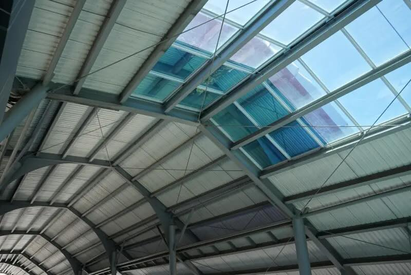

Extreme Weather and Engineering Solutions
What is Extreme Weather?
Extreme weather refers to any weather conditions that fall outside of normal patterns. These include:
- Heavy winds
- Thunderstorms
- Floods
- Heat waves
- Tornadoes
- Hurricanes
- Hail
- Blizzards

A powerful hurricane viewed from space, showing its distinctive spiral structure
Fun Fact: While we can't prevent extreme weather from happening, scientists and engineers have developed many solutions to reduce its impact on people and property!
Extreme weather is a result of natural processes that occur all around the globe. Weather is something people experience every day, but extreme weather is so intense that it deserves special attention.
Predicting Extreme Weather
By studying weather patterns over time, scientists can often predict when and where certain types of extreme weather might occur.
For example, based on data collected over centuries, we know that hurricanes in the Atlantic Ocean typically occur between June 1st and November 30th each year. This allows people living in coastal areas to prepare themselves before hurricane season begins.
Think About It: How might knowing when a hurricane could hit help people reduce the damage it causes?
While we can predict seasonal patterns of some extreme weather events, other types like tornadoes can be much harder to predict exactly when and where they will occur. Scientists can often identify conditions that might lead to tornadoes, but pinpointing exactly when one will touch down remains challenging.
Engineering Solutions for Coastal Areas
Coastal areas often experience flooding from extreme weather events like hurricanes and storms. Engineers have developed several solutions to protect these areas:
Seawalls
Seawalls are concrete walls built along beaches that experience large waves. These physical barriers help block water and prevent flooding as water rises during storms.
Recurved Seawalls
A special type of seawall with a curved surface is known as a recurved wall. These walls are especially effective because they not only block waves but also send the wave energy back out toward the ocean. This redirection of energy helps reduce flooding even more effectively than straight seawalls.

A recurved seawall with its distinctive curved top that redirects wave energy back to the sea
Straight Seawall
Simply blocks water but absorbs the full force of waves
Moderate flood protection
Recurved Seawall
Blocks water AND redirects wave energy back to sea
Superior flood protection
Building on Stilts or Elevated Foundations
Another way to protect against flooding is to construct buildings on stilts or on top of garages. This raises the living areas above potential flood levels, keeping water from entering homes.

Coastal homes built on stilts to prevent flooding during high water events
Did You Know? In testing, areas with no flood protection collected over 1000 mL of water, while areas protected by recurved walls collected almost no water at all!
Engineering Solutions for High Winds
High winds from hurricanes and tornadoes can cause severe damage to buildings, especially roofs. The shape of a roof dramatically affects how well it withstands high winds.
Roof Designs

Comparison between gable roof (left) and hip roof (right) designs
Gable Roof
Has sides that are straight up and down forming an "A" shape
Wind pushes directly against the flat surface
More vulnerable to high winds and may be pushed completely off a home
Hip Roof
Has sides that are all slanted up
Wind gets deflected upward instead of pushing directly against the side
Much more resistant to high winds
Engineers recommend hip roofs for areas that frequently experience high winds because the slanted design helps the wind flow over the roof rather than pushing against it.
Engineering Solutions for Lightning
Lightning is a powerful form of electricity moving through the air. When it strikes homes, it can damage the building and electrical appliances inside.

Lightning striking a tall building in a city skyline

A lightning rod installed on the roof of a house
Lightning Rods
Lightning rods are metal rods mounted on or near buildings. They work by:
- Attracting lightning strikes (because electricity naturally flows toward metal)
- Providing a direct path for the electrical energy to follow
- Transferring the energy safely to the ground through wires
This prevents the electrical energy from passing through the building itself, protecting both the structure and the electronics inside.
Historical Note: Benjamin Franklin, one of America's founding fathers, conducted experiments with lightning rods to better understand electricity. His discoveries helped develop the lightning protection systems we use today.
Tests have shown that homes with properly installed lightning rods maintain power during lightning strikes, while homes without them often experience electrical damage and power outages.
Engineering Solutions for Tornadoes
Tornadoes are columns of air that spin violently, with winds that can reach up to 300 miles per hour. These extreme winds can destroy houses and uproot trees.

A powerful tornado touching down in a rural area

The destructive power of a tornado as it moves across the landscape
Tornado Alley
A region of the United States stretching from Texas to North Dakota is known as "Tornado Alley" because it experiences more tornadoes than any other area in the country. People living in this region need to be especially prepared for these extreme weather events.

Map highlighting Tornado Alley, the region with the highest frequency of tornadoes in the United States
Safe Rooms and Special Building Materials
Engineers have developed special building panels that can withstand the winds of a tornado. These can be used to create safe rooms within homes. Even if a tornado destroys most of the house, these specially reinforced rooms remain intact, keeping people inside safe.

Special reinforced building panels being installed to create a tornado-resistant structure
Imagine: If you were designing a tornado-resistant building, what features would you include? Think about the shape, materials, and special safety areas.
Solutions for Urban Heat
Urban areas often experience higher temperatures than surrounding rural areas due to the concentration of buildings, pavement, and reduced vegetation. This is known as the "urban heat island effect."
Reflective Surfaces
One innovative solution is painting roads with reflective white paint. This simple change:
- Reflects sunlight instead of absorbing it
- Reduces surface temperatures on paved areas
- Helps lower the overall temperature in urban areas

A street painted with reflective white paint to reduce heat absorption during hot weather
Dark surfaces like traditional asphalt absorb heat, making areas hotter. White or light-colored surfaces reflect heat away, helping to keep areas cooler during extreme heat events.
Engineering Solutions Comparison
| Weather Hazard |
Engineering Solution |
How It Works |
Effectiveness |
| Coastal Flooding |
Recurved Seawall |
Blocks and redirects wave energy back to sea |
Very High - Significantly reduces water flooding land |
| Coastal Flooding |
Buildings on Stilts |
Elevates living areas above flood level |
High - Keeps home interiors dry during floods |
| High Winds |
Hip Roof Design |
Deflects wind upward instead of catching it |
High - Much less likely to be damaged in high winds |
| Lightning |
Lightning Rod |
Redirects electrical energy safely to ground |
Very High - Prevents electrical damage to buildings |
| Tornadoes |
Safe Room with Special Panels |
Creates protected space that can withstand high winds |
High - Provides life-saving shelter during tornadoes |
| Urban Heat |
Reflective Road Paint |
Reflects sunlight instead of absorbing heat |
Moderate - Helps reduce surface temperatures |
Preparing for Extreme Weather
While engineering solutions help reduce damage from extreme weather, personal preparation is also important:
- Stay informed about weather forecasts and warnings
- Have emergency supplies ready (water, food, first aid kit, etc.)
- Know evacuation routes if you live in areas prone to hurricanes or flooding
- Have a family emergency plan
- Consider weather hazards when choosing or modifying your home
Create: Design an emergency preparedness plan for your home. What supplies would you need? Where would you go in different types of extreme weather? Who would you contact?
Key Vocabulary
| Term |
Definition |
| Extreme Weather |
Any weather that falls outside the realm of normal patterns |
| Weather Patterns |
A series of repeating weather events |
| Engineering Solutions |
New inventions and building methods that can help reduce the effects of extreme weather |
| Gable Roof |
A type of roof in which two sides form an "A" shape |
| Hip Roof |
A type of roof in which ALL sides slope down |
| Lightning Rod |
A metal rod mounted on or near a building that protects it against electrical surges by redirecting the electrical energy into the ground |
| Seawall |
A concrete wall built along beaches to protect against large waves |
| Recurved Wall |
A seawall with a curved surface that redirects wave energy back to the ocean |
| Tornado Alley |
A region from Texas to North Dakota known for having more tornadoes than any other area |
Check Your Understanding
1. What defines extreme weather?
2. Why are recurved seawalls more effective than straight seawalls?
3. How do hip roofs help protect against high winds compared to gable roofs?
4. Explain how lightning rods protect buildings during lightning strikes.
5. When is hurricane season in the Atlantic Ocean?
6. Where is Tornado Alley located, and why is it called that?
7. How does painting roads with reflective white paint help during heat waves?
8. What are two ways engineers have designed buildings to withstand flooding?
9. What can people do to prepare for extreme weather events?
10. What makes safe rooms effective during tornadoes?
Critical Thinking Challenges
Challenge 1: If you lived in a coastal area that experienced both hurricanes and heat waves, what combination of engineering solutions would you implement to protect your home? Explain why you chose each solution.
Challenge 2: Compare the costs and benefits of different flood protection methods. Consider initial cost, maintenance needs, lifespan, and effectiveness in your analysis.
Challenge 3: Design a new engineering solution for an extreme weather problem not fully addressed by current methods. Explain how your solution works and why it would be effective.